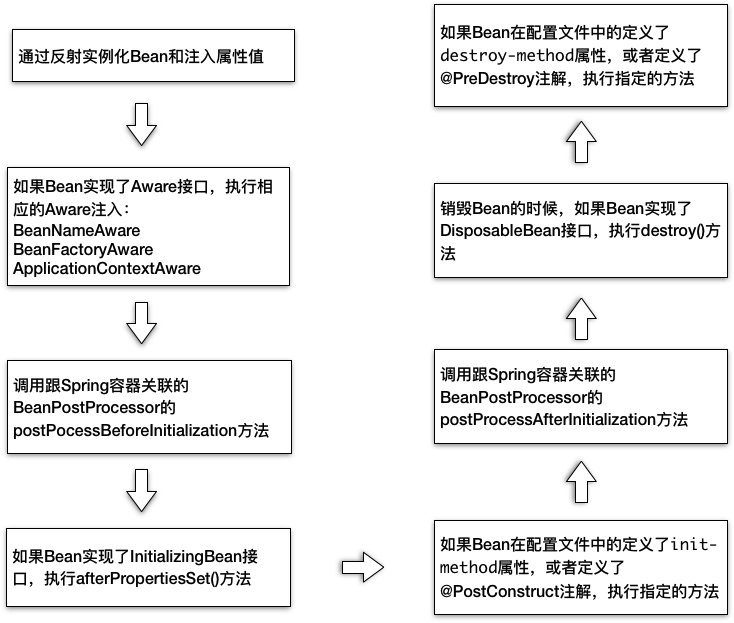

- 00 开篇词 Java程序员如何快速成长？.md.html
- 01 Web容器学习路径.md.html
- 02 HTTP协议必知必会.md.html
- 03 你应该知道的Servlet规范和Servlet容器.md.html
- 04 实战：纯手工打造和运行一个Servlet.md.html
- 05 Tomcat系统架构（上）： 连接器是如何设计的？.md.html
- 06 Tomcat系统架构（下）：聊聊多层容器的设计.md.html
- 07 Tomcat如何实现一键式启停？.md.html
- 08 Tomcat的“高层们”都负责做什么？.md.html
- 09 比较：Jetty架构特点之Connector组件.md.html
- 10 比较：Jetty架构特点之Handler组件.md.html
- 11 总结：从Tomcat和Jetty中提炼组件化设计规范.md.html
- 12 实战：优化并提高Tomcat启动速度.md.html
- 13 热点问题答疑（1）：如何学习源码？.md.html
- 14 NioEndpoint组件：Tomcat如何实现非阻塞I_O？.md.html
- 15 Nio2Endpoint组件：Tomcat如何实现异步I_O？.md.html
- 16 AprEndpoint组件：Tomcat APR提高I_O性能的秘密.md.html
- 17 Executor组件：Tomcat如何扩展Java线程池？.md.html
- 18 新特性：Tomcat如何支持WebSocket？.md.html
- 19 比较：Jetty的线程策略EatWhatYouKill.md.html
- 20 总结：Tomcat和Jetty中的对象池技术.md.html
- 21 总结：Tomcat和Jetty的高性能、高并发之道.md.html
- 22 热点问题答疑（2）：内核如何阻塞与唤醒进程？.md.html
- 23 Host容器：Tomcat如何实现热部署和热加载？.md.html
- 24 Context容器（上）：Tomcat如何打破双亲委托机制？.md.html
- 25 Context容器（中）：Tomcat如何隔离Web应用？.md.html
- 26 Context容器（下）：Tomcat如何实现Servlet规范？.md.html
- 27 新特性：Tomcat如何支持异步Servlet？.md.html
- 28 新特性：Spring Boot如何使用内嵌式的Tomcat和Jetty？.md.html
- 29 比较：Jetty如何实现具有上下文信息的责任链？.md.html
- 30 热点问题答疑（3）：Spring框架中的设计模式.md.html
- 31 Logger组件：Tomcat的日志框架及实战.md.html
- 32 Manager组件：Tomcat的Session管理机制解析.md.html
- 33 Cluster组件：Tomcat的集群通信原理.md.html
- 34 JVM GC原理及调优的基本思路.md.html
- 35 如何监控Tomcat的性能？.md.html
- 36 Tomcat I_O和线程池的并发调优.md.html
- 37 Tomcat内存溢出的原因分析及调优.md.html
- 38 Tomcat拒绝连接原因分析及网络优化.md.html
- 39 Tomcat进程占用CPU过高怎么办？.md.html
- 40 谈谈Jetty性能调优的思路.md.html
- 41 热点问题答疑（4）： Tomcat和Jetty有哪些不同？.md.html
- 特别放送 如何持续保持对学习的兴趣？.md.html
- 结束语 静下心来，品味经典.md.html
- 捐赠
11 总结：从Tomcat和Jetty中提炼组件化设计规范
在当今的互联网时代，我们每个人获取信息的机会基本上都是平等的，但是为什么有些人对信息理解得更深，并且有自己独到的见解呢？我认为是因为他们养成了思考和总结的好习惯。当我们学习一门技术的时候，如果可以勤于思考、善于总结，可以帮助我们看到现象背后更本质的东西，让我们在成长之路上更快“脱颖而出”。
我们经常谈敏捷、快速迭代和重构，这些都是为了应对需求的快速变化，也因此我们在开始设计一个系统时就要考虑可扩展性。那究竟该怎样设计才能适应变化呢？或者要设计成什么样后面才能以最小的成本进行重构呢？今天我来总结一些Tomcat和Jetty组件化的设计思想，或许从中我们可以得到一些启发。
组件化及可配置
Tomcat和Jetty的整体架构都是基于组件的，你可以通过XML文件或者代码的方式来配置这些组件，比如我们可以在server.xml配置Tomcat的连接器以及容器组件。相应的，你也可以在jetty.xml文件里组装Jetty的Connector组件，以及各种Handler组件。也就是说，Tomcat和Jetty提供了一堆积木，怎么搭建这些积木由你来决定，你可以根据自己的需要灵活选择组件来搭建你的Web容器，并且也可以自定义组件，这样的设计为Web容器提供了深度可定制化。
那Web容器如何实现这种组件化设计呢？我认为有两个要点：
- 第一个是面向接口编程。我们需要对系统的功能按照“高内聚、低耦合”的原则进行拆分，每个组件都有相应的接口，组件之间通过接口通信，这样就可以方便地替换组件了。比如我们可以选择不同连接器类型，只要这些连接器组件实现同一个接口就行。
- 第二个是Web容器提供一个载体把组件组装在一起工作。组件的工作无非就是处理请求，因此容器通过责任链模式把请求依次交给组件去处理。对于用户来说，我只需要告诉Web容器由哪些组件来处理请求。把组件组织起来需要一个“管理者”，这就是为什么Tomcat和Jetty都有一个Server的概念，Server就是组件的载体，Server里包含了连接器组件和容器组件；容器还需要把请求交给各个子容器组件去处理，Tomcat和Jetty都是责任链模式来实现的。
用户通过配置来组装组件，跟Spring中Bean的依赖注入相似。Spring的用户可以通过配置文件或者注解的方式来组装Bean，Bean与Bean的依赖关系完全由用户自己来定义。这一点与Web容器不同，Web容器中组件与组件之间的关系是固定的，比如Tomcat中Engine组件下有Host组件、Host组件下有Context组件等，但你不能在Host组件里“注入”一个Wrapper组件，这是由于Web容器本身的功能来决定的。
组件的创建
由于组件是可以配置的，Web容器在启动之前并不知道要创建哪些组件，也就是说，不能通过硬编码的方式来实例化这些组件，而是需要通过反射机制来动态地创建。具体来说，Web容器不是通过new方法来实例化组件对象的，而是通过Class.forName来创建组件。无论哪种方式，在实例化一个类之前，Web容器需要把组件类加载到JVM，这就涉及一个类加载的问题，Web容器设计了自己类加载器，我会在专栏后面的文章详细介绍Tomcat的类加载器。
Spring也是通过反射机制来动态地实例化Bean，那么它用到的类加载器是从哪里来的呢？Web容器给每个Web应用创建了一个类加载器，Spring用到的类加载器是Web容器传给它的。
组件的生命周期管理
不同类型的组件具有父子层次关系，父组件处理请求后再把请求传递给某个子组件。你可能会感到疑惑，Jetty的中Handler不是一条链吗，看上去像是平行关系？其实不然，Jetty中的Handler也是分层次的，比如WebAppContext中包含ServletHandler和SessionHandler。因此你也可以把ContextHandler和它所包含的Handler看作是父子关系。
而Tomcat通过容器的概念，把小容器放到大容器来实现父子关系，其实它们的本质都是一样的。这其实涉及如何统一管理这些组件，如何做到一键式启停。
Tomcat和Jetty都采用了类似的办法来管理组件的生命周期，主要有两个要点，一是父组件负责子组件的创建、启停和销毁。这样只要启动最上层组件，整个Web容器就被启动起来了，也就实现了一键式启停；二是Tomcat和Jetty都定义了组件的生命周期状态，并且把组件状态的转变定义成一个事件，一个组件的状态变化会触发子组件的变化，比如Host容器的启动事件里会触发Web应用的扫描和加载，最终会在Host容器下创建相应的Context容器，而Context组件的启动事件又会触发Servlet的扫描，进而创建Wrapper组件。那么如何实现这种联动呢？答案是观察者模式。具体来说就是创建监听器去监听容器的状态变化，在监听器的方法里去实现相应的动作，这些监听器其实是组件生命周期过程中的“扩展点”。
Spring也采用了类似的设计，Spring给Bean生命周期状态提供了很多的“扩展点”。这些扩展点被定义成一个个接口，只要你的Bean实现了这些接口，Spring就会负责调用这些接口，这样做的目的就是，当Bean的创建、初始化和销毁这些控制权交给Spring后，Spring让你有机会在Bean的整个生命周期中执行你的逻辑。下面我通过一张图帮你理解Spring Bean的生命周期过程：

组件的骨架抽象类和模板模式
具体到组件的设计的与实现，Tomcat和Jetty都大量采用了骨架抽象类和模板模式。比如说Tomcat中ProtocolHandler接口，ProtocolHandler有抽象基类AbstractProtocol，它实现了协议处理层的骨架和通用逻辑，而具体协议也有抽象基类，比如HttpProtocol和AjpProtocol。对于Jetty来说，Handler接口之下有AbstractHandler，Connector接口之下有AbstractConnector，这些抽象骨架类实现了一些通用逻辑，并且会定义一些抽象方法，这些抽象方法由子类实现，抽象骨架类调用抽象方法来实现骨架逻辑。
这是一个通用的设计规范，不管是Web容器还是Spring，甚至JDK本身都到处使用这种设计，比如Java集合中的AbstractSet、AbstractMap等。 值得一提的是，从Java 8开始允许接口有default方法，这样我们可以把抽象骨架类的通用逻辑放到接口中去。
本期精华
今天我总结了Tomcat和Jetty的组件化设计，我们可以通过搭积木的方式来定制化自己的Web容器。Web容器为了支持这种组件化设计，遵循了一些规范，比如面向接口编程，用“管理者”去组装这些组件，用反射的方式动态的创建组件、统一管理组件的生命周期，并且给组件生命状态的变化提供了扩展点，组件的具体实现一般遵循骨架抽象类和模板模式。
通过今天的学习，你会发现Tomcat和Jetty有很多共同点，并且Spring框架的设计也有不少相似的的地方，这正好说明了Web开发中有一些本质的东西是相通的，只要你深入理解了一个技术，也就是在一个点上突破了深度，再扩展广度就不是难事。并且我建议在学习一门技术的时候，可以回想一下之前学过的东西，是不是有相似的地方，有什么不同的地方，通过对比理解它们的本质，这样我们才能真正掌握这些技术背后的精髓。
课后思考
在我们的实际项目中，可能经常遇到改变需求，那如果采用组件化设计，当需求更改时是不是会有一些帮助呢？
不知道今天的内容你消化得如何？如果还有疑问，请大胆的在留言区提问，也欢迎你把你的课后思考和心得记录下来，与我和其他同学一起讨论。如果你觉得今天有所收获，欢迎你把它分享给你的朋友。
© 2019 - 2023 Liangliang Lee. Powered by gin and hexo-theme-book.